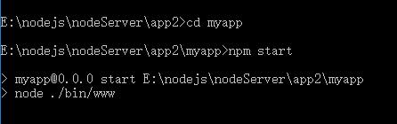

在使用生成器启动项目的时候，启动项目后显示如下图：

这种方式如果页面做了修改，则必须重新启动express服务器才能刷新页面，很不方便，使用supervisor热部署工具后可以进行热部署，
操作如下：
由于上生成器启动项目 使用了 npm start 命令实际上是使用 node ./bin/www 命令，可以在上面的截图中看到：
在使用supervisor 的时候，启动项目则使用 supervisor ./bin/www 即可，当页面修改并保存后，此工具会立即监听到，并发生变化，如下图 ：